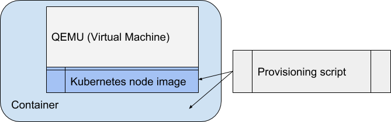
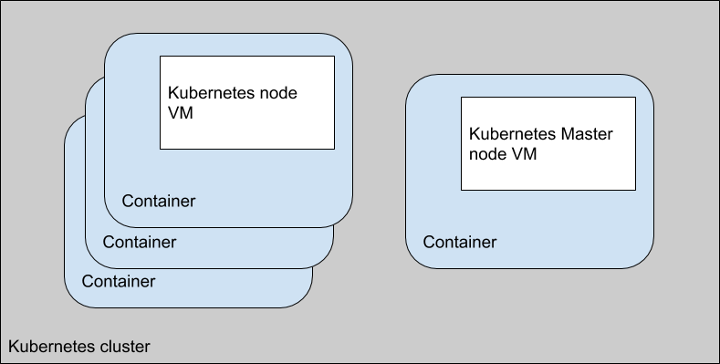
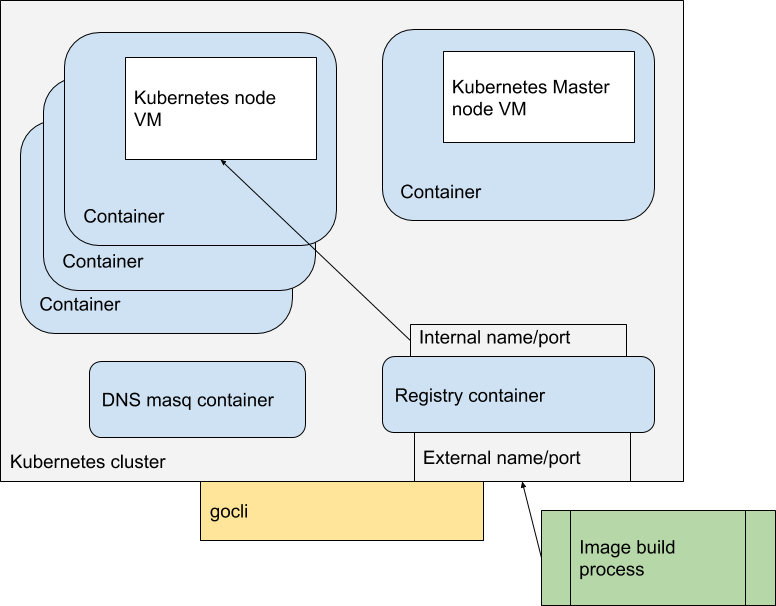

Kubevirtci
Building Clusters with kubevirtci
One of the projects in the KubeVirt github organization is a project called kubevirtci. While this may sound like it’s the repo containing the KubeVirt CI system and scripts, that’s not completely accurate. We leverage kubevirtci for our CI process, but there’s more to the CI system than just this repo. Today, we’re not going to talk about the CI system in general, but instead we’re going to talk about the kubevirtci project, what it does, how it does it and why it’s pretty cool.
What it does
In short: Deploys a Kubernetes (or OpenShift) cluster using QEMU Virtual Machines, that run inside Docker containers. First a base image is provisioned, this image contains a stock a Kubernetes node. Then one or more of these images are deployed in the target environment to make up the cluster.
Provisioning
Building the Kubernetes Node virtual machine happens in several steps:
- Use a Fedora cloud image.
- Provision Kubernetes using Ansible onto that image.
- Install any drivers and providers/provisioners for storage or other resources needed for the cluster. Once the node is provisioned, it is packaged inside a Docker container and published to a registry.

Deployment
To create a cluster, all one has to do is start up a number of containers, which in turn start up the Virtual Machine contained within that container. The first node is designated as the master node and a script is run during startup to configure any master node specific configuration. Any additional nodes have a post startup script run to register themselves as nodes with the master. As this point we have a basic kubernetes cluster running the number of specified nodes. Plus some other interesting services described later.

How does it work?
After the provision step, which has created a pre-built Kubernetes node in a virtual machine, the deployment step doesn’t happen all by itself. Starting up the cluster is handled by a cli application, aptly named ‘gocli’.
Gocli is a go application that contains the knowledge needed to start the cluster, make a node the master node, and then register the other nodes with the master node as compute nodes. It also does a few other nice things, like start a dnsmasq container for dns inside the cluster, and a docker registry container for images. It also can extract and update the kubeconfig for the cluster, to make it possible for external tools to interact with the cluster (such as kubectl). And it can of course shut down the cluster in an orderly fashion.
The entire cluster is ephemeral which is very helpful when developing new applications which could potentially damage the cluster. Simply shut down the cluster, and start a new fresh one. The ephemeral nature and ease of deployment makes this extremely useful in a CI/CD pipeline context
Why is the registry container useful? Let’s say you are developing a new application and you wish to test it in a Kubernetes cluster. You would build the container image with whatever tools you normally use, you can then publish it to the cluster registry, and deploy the manifest that uses the registry to deploy the container in the cluster. The gocli command tool has the ability to find an external name and port for the internal registry into which you can publish your images.

All of the above allows you to now with a few commands, spin up a kubernetes cluster, build application images, push those images into a registry inside that cluster, and deploy that application inside the cluster. As a developer this allows quick compile/test scenarios in a somewhat realistic environment on a regular workstation. It allows for automatic end to end testing in a real cluster, and it allows for CI/CD tools to run tests against an ephemeral cluster that can be spun up and destroyed easily.
Why this is cool
So how is this better than simply creating some Virtual Machines and cloning them to add new nodes? For one packaging is much easier, you can simply drop it in a container registry and its available everywhere the registry is available. Another thing is a lot of the configuration is stored in the container instead of in the Virtual Machine, so it is easy to layer on top of that container a different configuration for different use cases. The Virtual Machine stays the same, it’s the container that changes to meet the needs of the use case. Since the container knows all the details of the Virtual Machine it is also possible to construct utilities that retrieve information about the Virtual Machine or pass new information to the Virtual Machine through the container.
But the biggest advantage is that this can all be easily automated and repeated. Each time you spin up a cluster, it will be identical from a previous run. You have a mechanism to allow you to populate the cluster with an application you are developing/testing and then running automated processes against that application.
KubeVirt itself works on a similar principal, embed a QEMU process in a container to start a Virtual Machine with configuration obtained from the encapsulating container. And the KubeVirt development team uses kubevirtci images in their development workflow as well.
And a final interesting thought: Everything mentioned in this article is a container, from the Virtual Machine images, to the gocli utility. It might be an interesting exercise to see if we can leverage kubernetes to manage the life cycle in a CI/CD system. We would then be creating Kubernetes clusters inside a kubernetes cluster to run CI/CD.